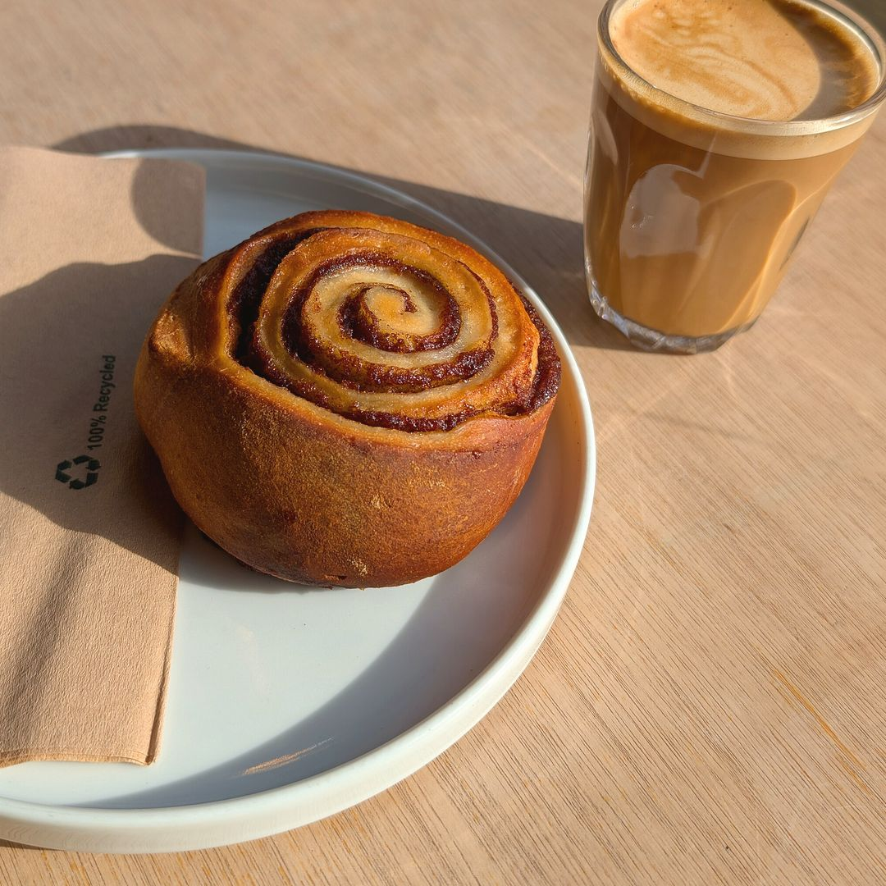

Café de bairro · Uccle
A pausa da canela.
Cinnamon buns, brioches e café para viagem.
Sua pausa na Rue Vanderkindere 497, Uccle.
Fotos ilustrativas do Wikimedia Commons; não mostram produtos da Kanel. Autores e licenças no rodapé.
Como chegar
Um café de bairro, em Uccle.
497
Rue Vanderkindere
1180 Uccle
Horários, disponibilidade dos produtos e preços não são publicados aqui: confirme diretamente com o café.
Rota no Google Maps